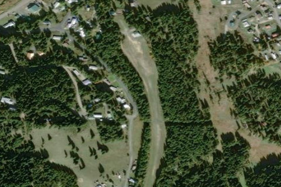

ELK CITY
S90 · ID

Aerial imagery source: Esri, Vantor, Earthstar Geographics, and the GIS User Community
View original source (FAA + Idaho ITD + Shortfield) →
| Identifier | S90 |
|---|---|
| State | ID |
| Runway length | 2,600 ft |
| Runway width | 150 ft |
| Surface | TURF |
| Runway | 14/35 |
| Elevation | 4,097 ft |
| Ownership | public |
| CTAF | 122.9 |
| Coordinates | 45.82268583, -115.43984972 |
Notes
[idaho_itd] Airfield [shortfield] Location Overview Elk City Airport sits right at the edge of Elk City, a small, remote community about 100 meters from town. The field lies at about 4,097 feet elevation in the South Fork Clearwater River drainage, deep in the Nez Perce-Clearwater National Forests of Idaho County. This is somewhat remote town reached mainly by a long mountain highway or by air. The single runway is designated 14/35, is 2,600 feet long, and has a turf surface. Camping & Recreation A camping area is located on the east side of the airstrip, about mid-field. Pilots have described the strip as being in very good condition, with nice camping spots set up and firewood provided, and local contacts can arrange pilot and guest camping spots during the summer months. The strip's proximity to town is a real draw — visitors can make a short walk into town for breakfast at the local cafe, and one pilot fondly recalled landing here for huckleberry ice cream. Beyond the airstrip, the area offers hunting, fishing, hiking, and access to the surrounding wilderness, including the Magruder Corridor and nearby hot springs. Notes & Warnings This is a mountain strip that demands respect. The runway is narrow, curved, and shaped like a hockey stick with a kink in the middle, lined by trees and brush on both sides, and pilots note the south end curves east, so landing runway 35 requires overshooting the threshold a bit. There's no control tower or on-field weather service, and the CTAF frequency is 122.9 MHz. There is no winter maintenance, so the field is a warm-season destination only. As with Idaho's backcountry strips generally, pilots are advised to fly early in the day before thermal turbulence builds, keep the aircraft light, watch density altitude, and avoid the mountains in strong wind — general mountain-flying discipline applies even at a relatively "civilized" strip like this one. History Elk City is a historic gold mining camp founded in 1861 following the discovery of placer gold along the South Fork of the Clearwater River and Newsome Creek. The town sprang up almost overnight, and by August 1861 it already had saloons, stores, and the other trappings of an old-west mining frontier. The boom drew over 2,000 miners by late 1861, though many later moved on to richer strikes in Montana; Chinese miners then worked many of the remaining claims until discriminatory laws and local pressures curtailed their operations. Hard-rock mining picked back up around 1902, and dredging continued into the 1930s, while a major fire in 1930 damaged much of the town and, combined with mining's decline, pushed the local economy toward timber, ranching, and recreation. The airstrip itself dates to the early aviation era of Idaho's backcountry, when small planes began supplying remote mining and ranching communities that were otherwise cut off much of the year — a role Elk City's airstrip continues in spirit today, now serving pilots, hunters, and recreational visitors rather than miners.